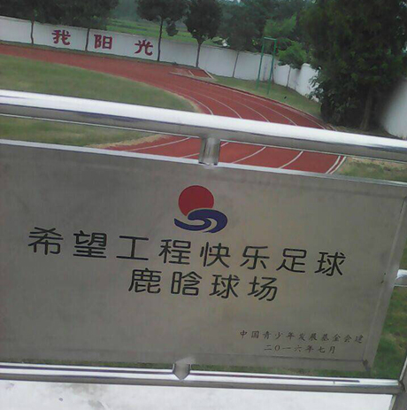

社会活动 | |
| 2013年6月23日，鹿晗参加了朴智星担任理事长的社会贡献财团JS Foundation举办的“第三届Asian Dream Cup”慈善足球竞赛，比赛募集的所有慈善资金捐给四川省的地震灾区的居民与孩子 。
2014年7月21日，鹿晗参与了韩红发起的公益行动“百人援青”，因此被认证为“善行偶像明星” 。8月24日，国内外演艺人士接力的冰桶挑战，引起了大众对于罕见病ALS渐冻症患者的关注，被点名的鹿晗直接为渐冻症患者捐款，并表示，“我很难在泼冰水中体会到ALS患者的痛苦，那就多放些关注在这个疾病和患者本身”，身体力行帮助罕见病症患者 。
2015年1月2日，鹿晗参加了CCTV1梦想星搭档的关注听障儿童健康，“叫醒耳朵一起唱”的爱心传递活动，并捐赠出自己常用的耳机为听障儿童筹款，累计筹款11.3万元 。3月31日，鹿晗粉丝团发起关注阿尔茨海默病老人，“黄手环”公益，累计筹款9.9万元 。6月1日，鹿晗与百度地图联手号召为乡村孩子捐校车。6月2日，加盟陈坤行走的力量梦想公益。7月14日，参与周迅关注自闭症儿童爱心活动。7月15日，助力韩红“百人援贵”公益活动。8月13日，参与“关注失独家庭，群星慈善拍卖”活动。9月23日，出席2015BAZAAR明星慈善夜，认捐一辆救护车。11月8日，鹿晗同跑男团成员一起参加了奔跑吧兄弟“奔跑阳光+”青少年成长助力计划，为南京某民工子弟学校的孩子们送上跑鞋、书籍等礼物。
2016年在鹿晗生日的4月，鹿晗国际粉丝后援会联合中国青少年发展基金会，发起“希望工程快乐足球”公益项目，以“7”场“希望工程快乐足球”设施装备为目标，召集粉丝筹集爱心善款，最终筹集善款48.33万元 。8月10日，鹿晗加入“阳光维生素补充计划”，同郭采洁等6位艺人捐助近40w物资送到西藏阿里地区，为当地小朋友的健康成长助力；同月27日，与腾讯公益慈善基金会共同发起鹿晗运动季“Light Run +1”线下荧光跑运动捐步公益项目，在不足72小时里捐步活动共发动了2107387人次，捐出210.74亿步， 最终筹得210万元，用于21所乡村幼儿园的修建。10月3日，为2016BAZAAR明星慈善夜捐赠三辆救护车。11月3日，携手佳洁士发起鹿晗笑容公益接力活动，仅一天时间便超速超额完成既定目标，同时达成77所希望小学公益爱牙套装捐赠和7场牙医进校活动。 2017年2月6日，清流资本宣布，将联合明星艺人鹿晗和新希望集团成立清晗基金，将针对新生代文化消费内容进行投资，扶持年轻文化内容创业者。 2018年1月31日，《中国慈善家》揭晓了“2017中国慈善名人榜”，鹿晗排名第26 。4月14日，由鹿晗及其工作室发起的“足球第一课”公益项目在北京正式启动，活动现场鹿晗和校方共同完成了捐赠仪式，捐赠金顶街第四小学一年足球训练基金及100套足球设备，并成功举办了首次线下足球公益活动 。 |